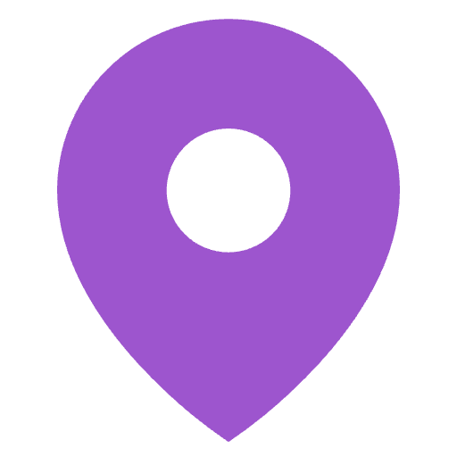
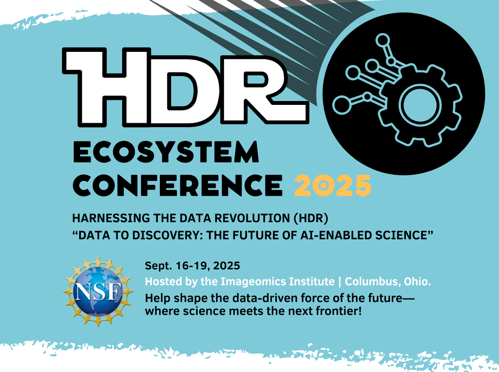
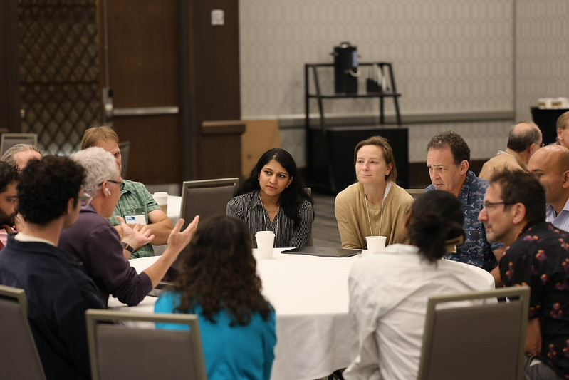

September 16–19, 2025
Starts: Tuesday 9/16 @ 6:00 PM
Ends: Friday 9/19 @ 1:30 PM

The Ohio State University, Columbus OH
Venue: Marriott Columbus OSU
Address: 3100 Olentangy River Rd, Columbus, OH 43202

The NSF Harnessing the Data Revolution (HDR) Ecosystem Conference is the premier national gathering of the HDR network—an integrated fabric of institutes, TRIPODS, Data Science Corps, and more-that are accelerating data-driven discovery across science and engineering. This year marks a pivotal convergence in Columbus, uniting researchers, practitioners, and students to share breakthroughs and chart a bold, data-rich future.
This year's conference theme, Data to Discovery: The Future of Al-Enabled Science, is designed to propel the HDR Ecosystem into the next phase of scientific discovery. This year's sessions are centered around four subthemes:
This theme explores how Al is transforming scientific discovery-enabling researchers to ask bigger, cross-scale questions and uncover fundamental insights about the natural world, from molecules to ecosystems to the entire planet. Through featured speakers, HDR project talks, and translational sessions, we'll highlight frontier opportunities in Al-driven science.
This theme focuses on how we move from raw data to meaningful understanding. It examines how we ask scientific questions, represent knowledge, connect diverse datasets, and build interpretable, structured Al systems. Through featured speakers and breakout sessions, we'll explore how to make sense of heterogeneous data and create Al that is not only powerful but also understandable and usable across disciplines.
This theme addresses the critical need for long-term data stewardship in high-throughput, high-impact research. Through working and breakouts sessions, we'll explore strategies for ensuring data continuity, preventing data loss, and planning for sustainable data management. Topics for exploration include common cyberinfrastructure challenges, essential components ("parts list"), and exploring collaborative approaches to data infrastructure and sustainability.
This theme focuses on cultivating Al and data literacy skills across the educational spectrum from K-12 to university to professional upskilling. Emphasis will be placed on developing innovative approaches to preparing the future Al-enabled workforce. The NextGen Forum will offer students, postdocs, and early career researchers a space for open discussion and collaboration as they shape the next generation of Al-driven science.
This event is more than a conference-it's a scientific gathering where:
From Al-powered biodiversity and climate science to advanced cyberinfrastructure and workforce development, HDR projects exemplify convergent science addressing societal grand challenges.
HDR's Big Idea is about transforming how foundational scientific questions are asked and answered using data-centric innovation.
Building on the momentum of the 2022-2024 conferences, this year focuses on deepening collaborations, showcasing accomplishments, and scaling research across domains.

Registration is by invitation only. Conference registration is available for invited participants in early August of 2025.
Marriott Columbus OSU provides excellent amenities and accessibility for networking and collaboration.
View Visitor Information